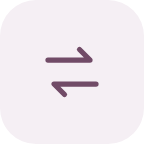
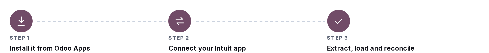
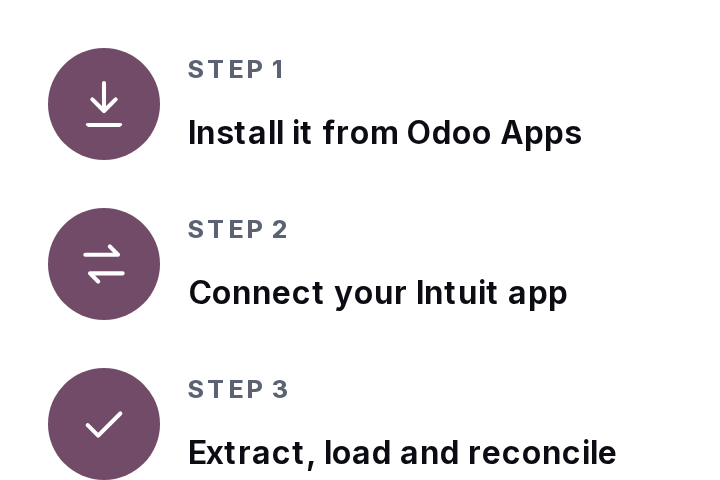
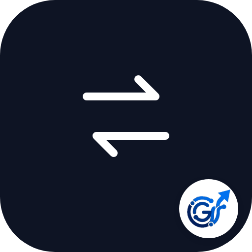

Works with
€9 + FlexigoTech Cloud
Connector plan: €49/month + VAT.

Read QuickBooks Online with your Intuit app
Accounts, customers, vendors and products
One opening entry with the open items
All of the above (requires FlexigoTech Cloud subscription)


€9 Module

Once per Odoo version ·
Odoo 20.0, not Odoo Online
+ FlexigoTech Cloud
Standard
€49/month
or €490/year
What's included
Pro
€98/month
or €980/year
Everything in Standard, plus
The module alone does not work without the subscription: its main function runs on FlexigoTech Cloud. Without a subscription you can view and export your data. Terms, data sent and privacy
No card neededCancel anytime
| Standard | Pro | |
|---|---|---|
| 3-connector pack | €129/month | €258/month |
| All included (one database) | €249/month | €498/month |
| First response | 1 working day | 4 working hours |
| Video call if needed | Not included | Included |
New connections with QuickBooks Online work through FlexigoTech Cloud, an external service of FlexigoTech (Flexibles y Accesorios Gobe, S.L., Spain) that runs on our servers, outside your Odoo. Your Intuit app's client secret is kept encrypted on our servers, and each request your Odoo makes to QuickBooks Online goes through FlexigoTech Cloud, which sends it on with a QuickBooks access token that it gets and renews with your Intuit app, and returns the answer. FlexigoTech Cloud also watches the sync and emails you if something fails.
You need your own QuickBooks Online account, under the terms of QuickBooks Online. The subscription pays for our service (the connection, the monitoring and support), not for access to QuickBooks Online.
The price on this page is a one-off payment for the module. Paid external service, billed separately: 49 EUR a month or 490 EUR a year per production database, VAT excluded. The staging and test copies of that database are included. The service includes a 14-day trial, no card required. One trial per account and module.
Configuration help and bug fixes are always provided to buyers, with or without the subscription.
Inside Odoo, in Settings → FlexigoTech Cloud. An administrator first reads and accepts the list of data below: nothing is sent before that. Then you can start the trial or subscribe; you accept the subscription terms there, and payment is made outside Odoo.
On our servers in Germany. When the subscription or the trial ends, or you disconnect the database, we delete your Intuit app's client secret and the data of that connection within 30 days at most, or sooner if QuickBooks Online requires it.
Requires an active FlexigoTech Cloud subscription: the extraction of your QuickBooks Online books for new connections runs on FlexigoTech Cloud. Your data stays readable and exportable in your Odoo. We never block Odoo and never delete anything in it. Configuration help and bug fixes are always provided to buyers.
If you already use an earlier version of this module, it stays installed with your data, and the QuickBooks Online connection saved before this version keeps working directly, as you bought it. Extracting your books into Odoo needs a new connection through FlexigoTech Cloud.
For Odoo 20.0, on Odoo.sh or on your own server. Not compatible with Odoo Online.
Privacy policy: at the end of this page. Questions: comercial@flexigobe.com
The extraction of your QuickBooks Online data through FlexigoTech Cloud, for new connections (requires FlexigoTech Cloud subscription).
The extraction of your QuickBooks Online data through FlexigoTech Cloud, for new connections (requires FlexigoTech Cloud subscription).
For Odoo 20.0 · QuickBooks Online
Extract your QuickBooks Online data, load the master data, post one opening entry from your Trial Balance with every open invoice and bill, bring in the stock at the cut-off date, and compare Odoo with QuickBooks account by account before you go live.
For finance teams and Odoo partners who switch a company from QuickBooks Online to Odoo 20 at a cut-off date. It moves balances and open items, not the history of every transaction.
Reads your QuickBooks Online company page by page, through FlexigoTech Cloud, into a staging area in Odoo (requires FlexigoTech Cloud subscription).
Turns the staging into partners, products, accounts, payment terms, analytic accounts, one opening entry and the opening stock. Runs inside your Odoo.
Compares Odoo with QuickBooks account by account, open item by open item and item by item. A difference of more than 0.01 blocks Reconciled.
FlexigoTech Cloud keeps the client secret of your Intuit app and the QuickBooks tokens encrypted, exchanges the authorization code, renews the access and passes each call of a new connection on to QuickBooks Online, keeping it only for the time needed to deliver it.
Your Odoo keeps the staging, the mappings and everything loaded: the load, the opening entry, the stock and the reconciliation run in Odoo and do not need the subscription. What is already extracted or loaded stays in Odoo.
Extract on a migration run reads, 1,000 records a page: accounts, tax codes, terms, classes, departments, customers, vendors, items, open invoices, open bills, every credit memo and vendor credit, and the Trial Balance to the day of the extraction, with the Inventory Valuation Summary at the same date. Everything goes into the migration staging of the project.
If FlexigoTech Cloud stops answering or the service ends, the run pauses where it was and goes on by itself when it can. The staging is never deleted.
Load on a migration run creates the records in the company of the project, archived when they are inactive in QuickBooks. Loading again updates the same records and never creates again what you deleted.
The Trial Balance becomes one posted opening entry at its end date, in the first general journal of the company: one line per account with its balance, and on the receivable and payable accounts one line per open invoice or bill, with its customer or vendor, its number, due date and open balance, in its own currency when it has another. You match those lines with the payments in Odoo.
No invoice or bill is created, so no tax or income is counted twice. A Trial Balance that does not balance creates nothing, and loading again duplicates nothing.
Unapplied credit memos and vendor credits are open items of the opening entry too, with the opposite sign, their customer or vendor, and their own currency at their exchange rate, so the receivables and payables match QuickBooks. The fully applied ones give no line.
The Inventory Valuation Summary gives the quantity and the asset value of each inventory item. They go into the main warehouse of the company, on the products the items became, at the QuickBooks value. They come from a location of their own, "QuickBooks opening stock", without a valuation account, so no stock valuation entry is made: the inventory account keeps the balance of the opening entry.
An item that is not loaded as a storable product, or is below zero, is listed and no stock is loaded. Loading again moves nothing twice.
After the load, Odoo's balance at the Trial Balance date is compared with QuickBooks' for every account, each receivable and payable account with its open items, and the stock item by item. The differences go to the reconciliation of the project, and a difference of more than 0.01 blocks Reconciled.
Each QuickBooks connection and its staging stay in their company. Only members of the Migration Manager group manage connections. A copy of the database (neutralized) forgets the QuickBooks tokens, and uninstalling the module deletes the Intuit apps kept in FlexigoTech Cloud. Connections made with a version before 1.1.0 keep working as bought, directly from Odoo (Connect to QuickBooks and Test Connection); to extract, you create a new connection, which goes through FlexigoTech Cloud.
We have not had access to an Intuit sandbox yet. The extraction, the load, the opening entry, the stock and the reconciliation are tested against a simulator that follows Intuit's official documentation and its official SDK. The names of the columns of the Inventory Valuation Summary (Qty and Asset Value) are not yet checked against a QuickBooks Online company. The test against a real QuickBooks Online company will be done when the sandbox is available.
QuickBooks Online, through Intuit's API: everything on this page. From QuickBooks Desktop, the IIF export of its lists (File → Utilities → Export → Lists to IIF Files) uploaded on a File Upload connection: Test Connection says what it holds, and Extract and Load bring its accounts, classes, customers, vendors and items like those of QuickBooks Online. The opening entry, the open items and the stock come only from QuickBooks Online.
The extraction, from QuickBooks Online or a Desktop export, and connecting a new connection, need the FlexigoTech Cloud trial or subscription. The load, the opening entry, the stock, the reconciliation and everything already extracted or loaded work in Odoo without it.
For an account, add an Account Type value to the mapping set of the project: as source, the Id, number or name of the QuickBooks account; as target, the Odoo account, or the code of a new account, which the load then creates. Without a mapping, the account is matched by its number. Classes and departments go in the dimension mapping of the project: an analytic account, the plan to create it in, or Do Not Migrate. Date-driven payment terms are not created: set up that payment term in Odoo yourself. Then run Load again: it updates what is there and duplicates nothing.
No. It brings the balances at the cut-off date and the invoices, bills and credits that are still open, as lines of one opening entry. No invoice or bill is created, so no tax or income is counted twice. The history stays in QuickBooks.
The run pauses where it was and nothing is deleted, in the staging or in Odoo. It goes on by itself when the service is back.
Your connections keep working as you bought them: Connect to QuickBooks and Test Connection from Odoo, with their tokens encrypted in Odoo. The extraction is new in 1.1.0 and goes through FlexigoTech Cloud, so it needs a new connection. To update, put the FlexigoTech Cloud module in the same addons path, restart and update this module (Apps → Upgrade); restarting without updating does not load it.
Yes. Each migration project loads into its own company, and each QuickBooks connection and its staging stay in their company.
Not yet: it is tested against a simulator that follows Intuit's official documentation and SDK (see the Intuit terms tab).
Write to comercial@flexigobe.com, with your Odoo version and the message of the migration run.
This is the part of our privacy policy that applies to whoever uses our Odoo modules and FlexigoTech Cloud. The complete policy, which also covers our website and our customer area, is available on request at comercial@flexigobe.com.
This English version is a translation for reference only. The Spanish text is the one that applies.
Flexibles y Accesorios Gobe, S.L., which sells software under the FlexigoTech brand.
We have not appointed a data protection officer because we are not required to (article 37 GDPR and article 34 LOPDGDD).
Atendyo, another product of this same company, has its own policy, published on its website, for its customers and for the businesses it writes to. This policy covers FlexigoTech's use of Atendyo as the chat on its own website.
When a retention period ends, we erase or anonymise the data. If a law requires us to keep it longer, we block it: it is set aside and used only to answer courts or public authorities while liability can still be claimed (article 32 LOPDGDD).
| Data | Legal basis | Retention |
|---|---|---|
| Which document you accepted or consented to (such as the terms of use or the subscription terms) or were informed of (this policy), its version and the SHA-256 hash of the text, the date, the IP address, the browser and where it happened (sign-up, purchase, new acceptance or preferences). Also when you withdraw a consent. | Legal obligation to be able to prove what you accepted or consented to (articles 5.2, 6.1.c and 7.1 GDPR). | While you have the account and then, blocked, for 5 years, the period for claims under a contract (article 1964.2 of the Spanish Civil Code). |
| Data | Legal basis | Retention |
|---|---|---|
| What you tell us through the website forms, by email, by phone or on WhatsApp: name, company, email, phone, website, your message and your answers to the form. | Pre-contractual steps you ask for (article 6.1.b GDPR) and legitimate interest in answering you (article 6.1.f GDPR). | 12 months from the last contact, unless it leads to a contract. In that case, the contract's period. |
The contact forms go through FormSubmit, which forwards them to us by email. If you write to us on WhatsApp, WhatsApp also processes that conversation under its own terms.
| Data | Legal basis | Retention |
|---|---|---|
| The details on each invoice. | Legal obligation (article 6.1.c GDPR). | 6 years (article 30 of the Spanish Commercial Code). |
We disclose them to the Spanish Tax Agency when the law requires it and to our tax and accounting advisers, who process them on our behalf.
| Data | Legal basis | Retention |
|---|---|---|
| What you ask for, any data we need to check and our answer. | Legal obligation to handle your rights and your complaints (article 6.1.c GDPR, article 12 GDPR and article 21 of the Spanish consumer protection act, TRLGDCU). | 3 years from our answer. |
FlexigoTech Cloud is the service we provide from our servers to our Odoo modules, which is contracted by subscription. Depending on the module, it syncs with a platform, provides a cloud service or monitors the official sources the module depends on and alerts you of their changes and deadlines. Your Odoo sends nothing to the cloud until an administrator of your Odoo accepts it on the FlexigoTech Cloud screen. The subscription payment is processed by Stripe, which keeps your payment method for renewals. We do not see or store your card details.
| Data | Legal basis | Retention |
|---|---|---|
| For each database that connects: the identifier (uuid) and address (URL) of the database, the Odoo version, the FlexigoTech modules installed, with their version, whether the database is a neutralised copy (staging or test), the company name and the email of the person who accepts, with the version of the accepted text and the date. If someone starts a trial from your Odoo, also their acceptance of the subscription terms and of the data processing agreement, with the version, the fingerprint of each text and the date, which we keep with your account and with the email with which the database was connected; we do not store the Odoo user who accepts. In connectors with a hub of ours that keeps the access of our integration, also what your Odoo sends to the hub when you connect the platform: the company name, a contact email (the company's or, if it has none, that of the user who connects), the address of the database and the language of that user. Afterwards, the date of its last connection. | For the database: pre-contractual measures and performance of the subscription contract (article 6.1.b GDPR). For the email of the person who accepts: if you contract as a professional, performance of the contract (article 6.1.b GDPR); if you accept on behalf of a company, our legitimate interest in maintaining the relationship with it (article 6.1.f GDPR and article 19 LOPDGDD). | As long as the database is linked to your account. If it is not linked to any, 12 months from its last connection. What is sent to the hub of a connector, while that connection lasts and, when it ends, 30 days at most. The proof of what was accepted follows section 2.3. |
| Your billing account and your subscriptions: company, VAT number, country and address, email of the account holder, whether you are a partner, and your customer and subscription identifiers in Stripe; for each subscription, the modules, tier, billing period, status and dates; the trials used; the reason you give us when you cancel, if you give one; and the service permits of each database, with the history of their changes and their cause. | Performance of the subscription contract (article 6.1.b GDPR) and accounting and tax obligations (article 6.1.c GDPR). The email of the account holder, if it belongs to a person who works for your company: our legitimate interest in maintaining the relationship with it (article 6.1.f GDPR and article 19 LOPDGDD). | As long as you have the account. If you delete it, the payment and subscription data that support your invoices stay blocked for 6 years (section 2.15). |
| Cloud access logs: IP address, date and time, requested address, database and result of each request, without tokens, keys or the content of the request. Those of the public page of the whistleblowing channel do not keep the IP address (section 10). | Legitimate interest in protecting the service and stopping abuse (article 6.1.f GDPR) and duty of security (article 32 GDPR). | 12 months, the time some platforms, such as Amazon, require. Those of the hub of the Amazon connector are archived for 13 months, without buyer data, to meet that period with a margin. |
What the cloud processes so that the service works (the credentials of your platforms, the notifications and business data that pass through it, the metrics and errors your Odoo sends and the fingerprints of the records a module seals) we process on behalf of your company, as processors, under the FlexigoTech Cloud data processing agreement (section 10).
You give us almost all of it. Stripe gives us the payment result and the billing details you type on its page, and Scaleway and Brevo tell us whether an email was delivered. In FlexigoTech Cloud, your Odoo sends us the database details when an administrator of your Odoo accepts it, and Stripe tells us the status of your payments and your subscription.
We do not sell personal data or share it for other companies' advertising. We disclose it to public authorities and courts when a law requires it. These providers process it on our behalf (article 28 GDPR), each only for what is shown:
| Provider | What for | Where |
|---|---|---|
| netcup GmbH | Servers for our website and its forms, the customer area, FlexigoTech Cloud (including its hosted AI, an open-weights model that runs on our own server) and the chat, their databases and their backups. | Germany |
| Stripe Payments Europe, Limited | Payments, subscriptions and invoices. Stripe also processes some data as a controller in its own right, to prevent fraud and meet its legal obligations. | Ireland; part of the processing in the United States |
| Scaleway SAS | Main sender of our emails, and reporting their delivery. | France |
| Sendinblue SAS (Brevo) | Internal notices to our team, and backup sender of our emails if Scaleway fails or its free monthly allowance runs out, and reporting their delivery. | France |
| GitHub, Inc. | Private repository with the log of orders, while we still use it. | United States |
| ImprovMX Incorporated | Forwards email sent to our FlexigoTech addresses to our mailbox. | United States |
| GoDaddy | Our mailbox, where we receive forms and enquiries. | United States |
| Calendly LLC | Video call bookings. | United States |
| Google Ireland Limited and Google LLC | Analytics and advertising, only with your permission. Fonts on the three Arabic pages of the website. | Ireland and United States |
| PostHog | Analytics, only with your permission. | European Union (PostHog's European cloud) |
| Supabase, Inc. | Old accounts of our website, until they are erased. | United States |
| Odoo S.A. (Odoo.sh) | Our Odoo instance, where the service that connects our Amazon connector to the seller's account runs (section 10). | Belgium, on Google Cloud servers; backups in France, the Netherlands and Sweden, with Google and OVH, and, until Odoo completes its transition, expected in the fourth quarter of 2026, one more in Canada |
| Our tax and accounting advisers | Accounting and taxes. | Spain |
Two other services receive data without a data processing agreement signed with us, because they do not offer one: FormSubmit, which receives what you write in the contact forms and forwards it to us by email, and jsDelivr, a file distribution network with servers in many countries that serves the icons on many pages of our website and sees your IP address. FormSubmit does not publish a privacy policy. If you would rather your enquiry did not go through FormSubmit, write to us directly at comercial@flexigobe.com.
Some of the providers in the table in section 4 process data in the United States. Each transfer has to rely on a GDPR safeguard: the adequacy decision on the EU-US Data Privacy Framework of 10 July 2023 (article 45 GDPR), if the provider is certified, or the European Commission's standard contractual clauses (article 46.2.c GDPR). Stripe (Stripe, LLC) and Cloudflare are certified under the Framework. Groq is not, and its safeguard is the standard contractual clauses. For GitHub, Calendly, Google, GoDaddy, ImprovMX, PostHog and Supabase we are checking which of the two safeguards applies to each. If you want to know or would like a copy, ask us. Odoo S.A. hosts our instance in the European Union; it may still keep a backup in Canada, which has an adequacy decision of the European Commission (article 45 GDPR), and give its affiliates outside the European Union limited and temporary access, under standard contractual clauses.
We do not take decisions based solely on automated processing that have legal effects on you or affect you in a similar way (article 22 GDPR). The chat answers automatically, but it does not decide anything about you. The fraud checks Stripe applies to payments are Stripe's own. In FlexigoTech Cloud, when a trial ends or a payment remains unpaid, the service stops automatically, as the subscription terms say. If you think it is a mistake, write to us and a person reviews it.
You can ask us for access to your data, its rectification or erasure, object to our processing it, ask us to restrict its use and take it with you in a machine-readable format (articles 15 to 22 GDPR). If you gave us your consent, you can withdraw it at any time, without affecting what we did before (article 7.3 GDPR).
In your account, in the Privacy section, you can download a copy of your data (a JSON file downloaded through a link that is valid for 7 days and only opens with your session signed in), and delete the account. For anything else, or if you have no account, write to comercial@flexigobe.com or by post to the address in section 1. Any other channel you use to ask us is also valid.
We will not ask for your ID card. If you write from the email of your account or your purchase, that is enough for us. Only if we have reasonable doubts about who you are will we ask for the minimum detail that lets us check (article 12.6 GDPR).
We answer within one month at most. If the request is complex or we receive many, we can extend that by two more months, and we would tell you within the first month (article 12.3 GDPR). Exercising your rights is free.
Some data cannot be erased while its legal retention period lasts, such as invoices. In that case we block it and tell you which data and until when. If you ask us to erase an order or download that is in the GitHub repository, we remove it from the log, but it may remain in the repository's history while we still use it; we will tell you what remains and until when.
If you think we have not handled your rights properly, you can complain to the Spanish Data Protection Agency (C/ Jorge Juan 6, 28001 Madrid).
If we suffered a security breach, we would notify the Spanish Data Protection Agency within 72 hours when the law requires it, and the people affected if it poses a high risk to them (articles 33 and 34 GDPR).
Our website, our modules and FlexigoTech Cloud are aimed at businesses and professionals, not at children under 14 (article 7 LOPDGDD). You must be of legal age to open an account or buy.
Our modules and connectors run inside each customer's Odoo. The data they handle (orders, invoices, customers) belongs to the customer, who is its controller, and stays in their installation. When a connector passes data through one of our servers, or when we provide support with access to a customer's Odoo, we process it on their behalf, only for that purpose and under the data processing agreement we sign with them (article 28 GDPR). If you are a customer of one of our customers, ask that company for your rights; if you write to us, we will pass your request on to them.
What FlexigoTech Cloud processes on behalf of our customers (the credentials of their platforms, the notifications and business data that pass through the cloud, and the metrics and errors their Odoo sends) is governed by the FlexigoTech Cloud data processing agreement, which forms part of the subscription terms. It sets out its sub-processors, its security measures and when the data is deleted.
If a company uses the hosted whistleblowing channel of our flexigo_whistleblowing module, the person who reports writes on a public page of FlexigoTech Cloud, and we process what they send on behalf of that company, which is the controller and informs the person who reports (Annex IV of the data processing agreement). Each report, attachment and message is sealed on arrival with the company's key, so that we cannot read it, and it is deleted when the company's Odoo collects it. For each report, its dates, a fingerprint of the follow-up code and the messages sealed for the person who reported remain until 183 days after its arrival, or until it is collected if that takes longer. We do not store the IP address of the person who reports, neither in the application nor in the logs of that page. If the company leaves the service, the page accepts reports for 90 days more, what is pending can be collected for another 90 days, and then it is deleted.
In the Klaviyo connector, contacts, orders and events go directly from the customer's Odoo to Klaviyo and do not pass through our servers. There is one exception, so that the customer keeps meeting its legal duties: while the sync is paused because the database has no service, the unsubscribes and the erasures (Article 17 GDPR) made in its Odoo reach Klaviyo through FlexigoTech Cloud. The email address, phone number or Klaviyo profile id of that person then passes through our servers only in transit, during that request, without being stored or logged. We process it on behalf of the customer, as a processor.
The authorisation that connects our connector to the seller's Amazon account goes through our Odoo instance on Odoo.sh.
For data our connector obtains from the Amazon Selling Partner API, we also commit to:
Each version has a number and a date, and previous versions remain available in the customer area. If a change affects how we use your data, we will tell you by email or in your account before it applies.
Version 1.8. Date: 22-10-2026 (22 October 2026).